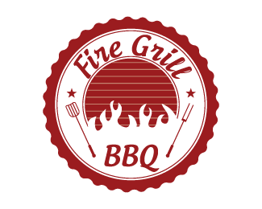

Contact
Menu
Home

BBQ Fire Grill
7500 North Glenoaks Blvd. Burbank, CA, 91504
Welcome to BBQ Fire Grill. BBQ Fire Grill meats began as a whole animal meat company in San Francisco, founded by Ryan Farr with immeasurable help from family and friends in 2009. Here at BBQ Fire Grill, we partner with farmers and ranchers to produce the highest quality BBQ from animals raised humanely and with care. Equipped with one of the area’s last remaining historic wood-fired barbecue pits, we are informed by the traditions and styles that have come before us, and we honor the greats who have stoked the pits in the wee hours of the night. From BBQ Fire Grill’s very beginning when Ryan started selling Chicharrones at the Farmer’s Market, we have strived to keep it simple and always follow our stomachs. We respect those who’ve come before us, but we do things our own way, the BBQ Fire Grill way.